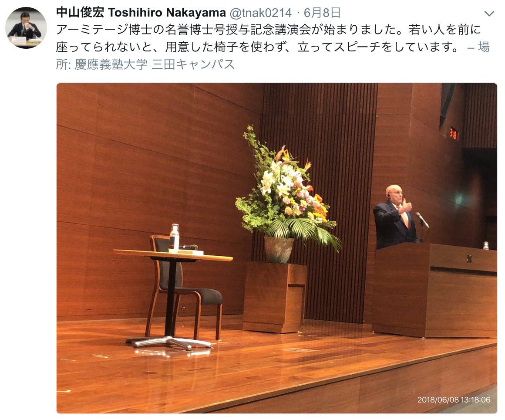

<!DOCTYPE html>
<html>

<head>
	<title>Richard Armitage.md</title>
	<meta http-equiv="Content-type" content="text/html;charset=UTF-8">

	<style>
		/*---------------------------------------------------------------------------------------------
 *  Copyright (c) Microsoft Corporation. All rights reserved.
 *  Licensed under the MIT License. See License.txt in the project root for license information.
 *--------------------------------------------------------------------------------------------*/

		body {
			font-family: "Segoe WPC", "Segoe UI", "SFUIText-Light", "HelveticaNeue-Light", sans-serif, "Droid Sans Fallback";
			font-size: 14px;
			padding: 0 12px;
			line-height: 22px;
			word-wrap: break-word;
		}

		#code-csp-warning {
			position: fixed;
			top: 0;
			right: 0;
			color: white;
			margin: 16px;
			text-align: center;
			font-size: 12px;
			font-family: sans-serif;
			background-color: #444444;
			cursor: pointer;
			padding: 6px;
			box-shadow: 1px 1px 1px rgba(0, 0, 0, .25);
		}

		#code-csp-warning:hover {
			text-decoration: none;
			background-color: #007acc;
			box-shadow: 2px 2px 2px rgba(0, 0, 0, .25);
		}


		body.scrollBeyondLastLine {
			margin-bottom: calc(100vh - 22px);
		}

		body.showEditorSelection .code-line {
			position: relative;
		}

		body.showEditorSelection .code-active-line:before,
		body.showEditorSelection .code-line:hover:before {
			content: "";
			display: block;
			position: absolute;
			top: 0;
			left: -12px;
			height: 100%;
		}

		body.showEditorSelection li.code-active-line:before,
		body.showEditorSelection li.code-line:hover:before {
			left: -30px;
		}

		.vscode-light.showEditorSelection .code-active-line:before {
			border-left: 3px solid rgba(0, 0, 0, 0.15);
		}

		.vscode-light.showEditorSelection .code-line:hover:before {
			border-left: 3px solid rgba(0, 0, 0, 0.40);
		}

		.vscode-dark.showEditorSelection .code-active-line:before {
			border-left: 3px solid rgba(255, 255, 255, 0.4);
		}

		.vscode-dark.showEditorSelection .code-line:hover:before {
			border-left: 3px solid rgba(255, 255, 255, 0.60);
		}

		.vscode-high-contrast.showEditorSelection .code-active-line:before {
			border-left: 3px solid rgba(255, 160, 0, 0.7);
		}

		.vscode-high-contrast.showEditorSelection .code-line:hover:before {
			border-left: 3px solid rgba(255, 160, 0, 1);
		}

		img {
			max-width: 100%;
			max-height: 100%;
		}

		a {
			color: #4080D0;
			text-decoration: none;
		}

		a:focus,
		input:focus,
		select:focus,
		textarea:focus {
			outline: 1px solid -webkit-focus-ring-color;
			outline-offset: -1px;
		}

		hr {
			border: 0;
			height: 2px;
			border-bottom: 2px solid;
		}

		h1 {
			padding-bottom: 0.3em;
			line-height: 1.2;
			border-bottom-width: 1px;
			border-bottom-style: solid;
		}

		h1,
		h2,
		h3 {
			font-weight: normal;
		}

		h1 code,
		h2 code,
		h3 code,
		h4 code,
		h5 code,
		h6 code {
			font-size: inherit;
			line-height: auto;
		}

		a:hover {
			color: #4080D0;
			text-decoration: underline;
		}

		table {
			border-collapse: collapse;
		}

		table>thead>tr>th {
			text-align: left;
			border-bottom: 1px solid;
		}

		table>thead>tr>th,
		table>thead>tr>td,
		table>tbody>tr>th,
		table>tbody>tr>td {
			padding: 5px 10px;
		}

		table>tbody>tr+tr>td {
			border-top: 1px solid;
		}

		blockquote {
			margin: 0 7px 0 5px;
			padding: 0 16px 0 10px;
			border-left: 5px solid;
		}

		code {
			font-family: Menlo, Monaco, Consolas, "Droid Sans Mono", "Courier New", monospace, "Droid Sans Fallback";
			font-size: 14px;
			line-height: 19px;
		}

		body.wordWrap pre {
			white-space: pre-wrap;
		}

		.mac code {
			font-size: 12px;
			line-height: 18px;
		}

		pre:not(.hljs),
		pre.hljs code>div {
			padding: 16px;
			border-radius: 3px;
			overflow: auto;
		}

		/** Theming */

		.vscode-light,
		.vscode-light pre code {
			color: rgb(30, 30, 30);
		}

		.vscode-dark,
		.vscode-dark pre code {
			color: #DDD;
		}

		.vscode-high-contrast,
		.vscode-high-contrast pre code {
			color: white;
		}

		.vscode-light code {
			color: #A31515;
		}

		.vscode-dark code {
			color: #D7BA7D;
		}

		.vscode-light pre:not(.hljs),
		.vscode-light code>div {
			background-color: rgba(220, 220, 220, 0.4);
		}

		.vscode-dark pre:not(.hljs),
		.vscode-dark code>div {
			background-color: rgba(10, 10, 10, 0.4);
		}

		.vscode-high-contrast pre:not(.hljs),
		.vscode-high-contrast code>div {
			background-color: rgb(0, 0, 0);
		}

		.vscode-high-contrast h1 {
			border-color: rgb(0, 0, 0);
		}

		.vscode-light table>thead>tr>th {
			border-color: rgba(0, 0, 0, 0.69);
		}

		.vscode-dark table>thead>tr>th {
			border-color: rgba(255, 255, 255, 0.69);
		}

		.vscode-light h1,
		.vscode-light hr,
		.vscode-light table>tbody>tr+tr>td {
			border-color: rgba(0, 0, 0, 0.18);
		}

		.vscode-dark h1,
		.vscode-dark hr,
		.vscode-dark table>tbody>tr+tr>td {
			border-color: rgba(255, 255, 255, 0.18);
		}

		.vscode-light blockquote,
		.vscode-dark blockquote {
			background: rgba(127, 127, 127, 0.1);
			border-color: rgba(0, 122, 204, 0.5);
		}

		.vscode-high-contrast blockquote {
			background: transparent;
			border-color: #fff;
		}
	</style>

	<style>
		/* Tomorrow Theme */

		/* http://jmblog.github.com/color-themes-for-google-code-highlightjs */

		/* Original theme - https://github.com/chriskempson/tomorrow-theme */

		/* Tomorrow Comment */

		.hljs-comment,
		.hljs-quote {
			color: #8e908c;
		}

		/* Tomorrow Red */

		.hljs-variable,
		.hljs-template-variable,
		.hljs-tag,
		.hljs-name,
		.hljs-selector-id,
		.hljs-selector-class,
		.hljs-regexp,
		.hljs-deletion {
			color: #c82829;
		}

		/* Tomorrow Orange */

		.hljs-number,
		.hljs-built_in,
		.hljs-builtin-name,
		.hljs-literal,
		.hljs-type,
		.hljs-params,
		.hljs-meta,
		.hljs-link {
			color: #f5871f;
		}

		/* Tomorrow Yellow */

		.hljs-attribute {
			color: #eab700;
		}

		/* Tomorrow Green */

		.hljs-string,
		.hljs-symbol,
		.hljs-bullet,
		.hljs-addition {
			color: #718c00;
		}

		/* Tomorrow Blue */

		.hljs-title,
		.hljs-section {
			color: #4271ae;
		}

		/* Tomorrow Purple */

		.hljs-keyword,
		.hljs-selector-tag {
			color: #8959a8;
		}

		.hljs {
			display: block;
			overflow-x: auto;
			color: #4d4d4c;
			padding: 0.5em;
		}

		.hljs-emphasis {
			font-style: italic;
		}

		.hljs-strong {
			font-weight: bold;
		}
	</style>

	<style>
		/*
 * Markdown PDF CSS
 */

		body {
			font-family: "Meiryo", "Segoe WPC", "Segoe UI", "SFUIText-Light", "HelveticaNeue-Light", sans-serif, "Droid Sans Fallback";
		}

		pre {
			background-color: #f8f8f8;
			border: 1px solid #cccccc;
			border-radius: 3px;
			overflow-x: auto;
			white-space: pre-wrap;
			overflow-wrap: break-word;
		}

		pre:not(.hljs) {
			padding: 23px;
			line-height: 19px;
		}

		blockquote {
			background: rgba(127, 127, 127, 0.1);
			border-color: rgba(0, 122, 204, 0.5);
		}

		.emoji {
			height: 1.4em;
		}

		/* for inline code */

		:not(pre):not(.hljs)>code {
			color: #C9AE75;
			/* Change the old color so it seems less like an error */
			font-size: inherit;
		}

		/* Page Break : use <div class="page"/> to insert page break
-------------------------------------------------------- */

		.page {
			page-break-after: always;
		}
	</style>
	<script>
		(function (i, s, o, g, r, a, m) {
		i['GoogleAnalyticsObject'] = r; i[r] = i[r] || function () {
			(i[r].q = i[r].q || []).push(arguments)
		}, i[r].l = 1 * new Date(); a = s.createElement(o),
			m = s.getElementsByTagName(o)[0]; a.async = 1; a.src = g; m.parentNode.insertBefore(a, m)
		})(window, document, 'script', '//www.google-analytics.com/analytics.js', 'ga');

		ga('create', 'UA-99377-8', 'auto');
		ga('send', 'pageview');

	</script>
</head>

<body>
	<h1 id="%E3%83%AA%E3%83%81%E3%83%A3%E3%83%BC%E3%83%89%E3%83%BBl%E3%83%BB%E3%82%A2%E3%83%BC%E3%83%9F%E3%83%86%E3%83%BC%E3%82%B8%E6%B0%8F-%E6%85%B6%E6%87%89%E7%BE%A9%E5%A1%BE%E5%A4%A7%E5%AD%A6%E5%90%8D%E8%AA%89%E5%8D%9A%E5%A3%AB%E7%A7%B0%E5%8F%B7%E6%8E%88%E4%B8%8E-%E8%A8%98%E5%BF%B5%E8%AC%9B%E6%BC%94%E4%BC%9A-68%E4%B8%89%E7%94%B0%E3%81%AE%E3%83%A1%E3%83%A2">リチャード・L・アーミテージ氏　慶應義塾大学名誉博士称号授与 記念講演会 6/8@三田のメモ</h1>
	<p>
		<a href="https://www.sfc.keio.ac.jp/news/013000.html">公式サイト</a>より開催概要</p>
	<blockquote>
		<p>記念講演「ベトナム、中東、そして日本における私の旅路：未来の若者たちへのメッセージ」
			<br> 日時：2018年6月8日（金）13:00～14:30
			<br> 場所：慶應義塾大学三田キャンパス（東京都港区三田2-15-45）南校舎5階南校舎ホール
			<br> 使用言語：英語（日本語同時通訳をいたします） 参加費：無料　どなたでもご参加いただけます
		</p>
	</blockquote>
	<p>講演は「私はブルーカラー政策実務家であり、この会場にいる皆さんほどの学術的知見を持ち合わせていないが、、、」という前置きでスタートした。</p>
	<h2 id="%E5%87%BA%E7%94%9F%E3%81%8B%E3%82%89%E6%B5%B7%E8%BB%8D%E5%A4%A7%E5%AD%A6%E6%A0%A1%E3%81%B8%E3%81%AE%E5%85%A5%E5%AD%A6%E3%81%BE%E3%81%A7">出生から海軍大学校への入学まで</h2>
	<p>地方の警察官の息子として生まれた。夏の間は靴を履かない生活だった。 16歳のとき、父親が妹と弟を含め3人の子を集め「全員、大学には行かないといけない。それがアーミテージ家のルールだ。」と告げられた。父親はさらに「学費は自分でなんとかしろ」と皆に告げ途方にくれた。
	</p>
	<p>高校時代からバスケットボールとアメフトの両方を頑張っていた。 父親がアナポリスのバーで呑んでいたとき海軍兵学校のコーチと偶然一緒になった。この出会いがきっかけでアーミテージ氏の高校の試合のビデオテープをこのコーチに送った。 数週間後に海軍兵学校からアメフトの奨学生として迎え入れるという連絡があった。
		アメフトは消耗の激しいスポーツである。通常の大学では怪我をしてアメフトができなくなれば、学費免除などは受けられなくなる。一方で海軍兵学校ではアメフトができなくなっても、士官候補生として教育が受けられ、少額の手当も出る。進路に不満はなかった。
	</p>
	<p>最初の配属先は海兵隊と海軍の何れかを志望できた。海軍を選んだ決め手は、海軍のほうが最初の任務から早く帰国できて、結婚したばかりの妻と時間をすごすことができる点だった。</p>
	<h2 id="%E3%83%99%E3%83%88%E3%83%8A%E3%83%A0%E3%81%A7%E3%81%AE%E4%BB%BB%E5%8B%99">ベトナムでの任務</h2>
	<p>軍事でも政治でもことが起きている「現場」に立ち続けたいと思ったきっかけはベトナム戦争のとき。 最初のベトナムでの作戦行動(ツアーと表現)ではズブズブと足が埋まっていく水田を一日中あるき続けた。数日後にそれが南ベトナム軍の人物評価のための通過儀礼だとしらされた。
	</p>
	<p>2回目の作戦行動では仲間の南ベトナム軍水兵が全身に重症をおった。怪我した仲間は、病院につれていく車の中で、激しく苦しがっておりもはや助かる見込みはないと思った。 鎮痛のためのモルヒネの皮下注射の方法は訓練されており、注射を1本、2本と彼に与えた。それでも彼はより激しく苦しむ。すべての結果を覚悟して、3本目のモルヒネ注射を行った。楽に死なせてやろうと思った。
		やがて病院につくと仲間は助かる見込みが少なすぎるため治療は後回しにされた。アーミテージ氏は米軍基地に急いで戻らざるを得なかった。
	</p>
	<p>4ヶ月半後に奇跡的に一命をとりとめた、その水兵が家族に連れられて、はるばる米軍基地までアーミテージ氏にお礼を言いにやってきた。涙が止まらなかった。水兵は、自分が命を救ってくれたことに感謝をしていた。しかし自分の行動はむしろ楽に死なせるためのものだった。思い出しても苦しく、人前で話すのも難しい思い出である。</p>
	<p>ベトナム戦争の終盤は危険な局面が多かった。南ベトナム軍の兵士とは生死をともにして戦っていた。ある時、退却の命令がサイゴンの米軍上官より出た。 米軍兵士だけを回収するヘリコプターがアーミテージ氏らのいる場所に送られるという連絡を受けた。ベトナム人の兵士を置き去りにするわけにはいかないと思い、拒否した。
		このときは結局、バンコクから飛来した中央情報局所有のC-130輸送機が急遽用意された。氏は南ベトナム軍兵士30名と一緒に安全な場所まで移動できた。 後日、米軍の別の部隊の通信傍受による情報収集活動のレポートを上官から見せられ、その時の自分達に危機が差し迫っていたことを知った。
	</p>
	<p>その後の在ベトナム駐留米軍の撤退の際には、多くの南ベトナム人を同時に避難させた。グアムまで連れて行った人多数。</p>
	<p>どちらも事前に軍内ので許可をとろうとすれば、却下されていたはずである。
		<strong>許可を取るよりも、やってから許してもらうほうがよい</strong>という人生の教訓を得た。</p>
	<h2 id="%E3%82%A4%E3%83%A9%E3%83%B3">イラン</h2>
	<p>イラン人は温厚で知的だが、集団・国家となると過剰な愛国心が見られる。
		<strong>中東では相互に情報が共有されるので、「ここだけの話」は通用しない。</strong>
	</p>
	<h2 id="911">911</h2>
	<p>2001/9/11の翌日、パキスタン軍統合情報局の当時の長官マフムード氏とワシントンD.C.で面会した。米側からはパキスタンに対して7つの要求を突きつけた。
		<strong>パキスタンとインドは普通に話していても言葉の調子が強い。</strong>
	</p>
	<p>ある時、パキスタン人勢力がカシミール高原に基地(キャンプと表現)を作っているという事実をインド側から突きつけられた。インドとパキスタンの間に入って調整をする役割をアーミテージ氏がになった。 早速パキスタンに行き、その事実をアメリカ独自の証拠を添えてパキスタン側に警告した。ムシャラフ大統領はその日のうちに基地を撤去することを約束した。
		大きな交渉の成果を持って、インドに戻った。意気揚々とインド側にムシャラフ大統領の結果を伝えたとき、すでにパキスタンは基地を撤去していた。しかしあろうことか数km離れた別の場所に新たな基地を作っていた。この件で責めるべくはムシャラフ大統領やパキスタン側ではなく、自分と同じように相手が考えているという勘違いをした自分自身であると感じた。
		<strong>自分と同じように相手が考えるという都合のいい前提をすてろ</strong>という教訓を得た。</p>
	<h2 id="%E6%97%A5%E6%9C%AC">日本</h2>
	<p>1968年前後に佐世保基地で任務にあたっていたとき、見慣れない米海軍の船が止まっていた。士官としてその船に乗船を求めたが却下された。 後に、その見慣れない船が
		<a href="https://en.wikipedia.org/wiki/USS_Pueblo_(AGER-2)">USSプエブロ</a>であると知った。 (注: 海軍、CIA、NSA共同の情報収集任務に就いていた船で、1968年に北朝鮮により拿捕され、乗組委員全員が人質となった。)</p>
	<h2 id="%E6%9C%80%E5%BE%8C%E3%81%AB">最後に</h2>
	<p>極度に幸せであっても、不幸せであってもいけない。 成功の秘訣は他者に対して優しくすることである。相手の非礼に腹をたて、さらなる非礼で応じるのは長い目でみて得るものが少ないのではないか。
	</p>
	<h2 id="%E4%BC%9A%E5%A0%B4%E3%81%8B%E3%82%89%E3%81%AE%E8%B3%AA%E5%95%8F">会場からの質問</h2>
	<h3 id="%E7%94%B0%E4%B8%AD%E7%9C%9F%E7%B4%80%E5%AD%90%E5%A4%A7%E8%87%A3%E3%81%A8%E3%81%AE%E9%9D%A2%E4%BC%9A%E3%82%AD%E3%83%A3%E3%83%B3%E3%82%BB%E3%83%AB%E3%81%AE%E4%BB%B6">田中真紀子大臣との面会キャンセルの件</h3>
	<p>外務大臣との面会予定はなかった。ホテルに戻ると、官邸から電話があり首相官邸に出向いた。当時の小泉首相から日本人拉致被害問題を解決するため平壌を訪問する計画について話があった。米側の感触を探ることを打診された。慌てて大使館に行き、機密回線を使って国務長官や当時の政権中枢と相談をおこなった。
		当時のブッシュ大統領は「小泉首相が日米関係を損なうような行動をするわけないことを確信している、つまり訪朝問題なし」というものだった。
	</p>
	<h3 id="%E3%82%A2%E3%83%BC%E3%83%9F%E3%83%86%E3%83%BC%E3%82%B8%E3%83%8A%E3%82%A4%E5%A0%B1%E5%91%8A%E6%9B%B8%E3%81%AE%E7%AC%AC4%E7%89%88%E3%81%8C%E5%87%BA%E3%82%8B%E3%81%A8%E8%81%9E%E3%81%84%E3%81%9F%E3%81%8C%E3%80%81%E7%AC%AC4%E7%89%88%E3%82%92%E5%9F%B7%E7%AD%86%E3%81%99%E3%82%8B%E3%81%AB%E8%87%B3%E3%81%A3%E3%81%9F%E7%B5%8C%E7%B7%AF%E3%81%AF">アーミテージナイ報告書の第4版が出ると聞いたが、第4版を執筆するに至った経緯は</h3>
	<p>トランプ政権は安定を欠いている。もちろんその中にはオバマ政権が貫いた穏健な外交のツケに起因するものもある。しかし日米関係の今後を憂う声の強まりを感じて、新たな報告書を作るべきと考えた。 ナイには最初断られた。2週間後にシンガポールと日本出張を終えたばかりのナイから電話があり「日米関係が脅かされていると私も感じた。執筆に参加したい」という返事があった。嬉しかった。
		(注: 過去に2000、2007、2012年に公開されている。内容についての言及は無し。)</p>
	<h3 id="%E3%83%99%E3%83%88%E3%83%8A%E3%83%A0%E6%88%A6%E4%BA%89%E6%99%82%E3%81%AE%E9%9F%93%E5%9B%BD%E8%BB%8D%E3%81%AE%E8%A1%8C%E5%8B%95%E3%81%AB%E3%81%A4%E3%81%84%E3%81%A6%E3%80%82%E5%BD%93%E6%99%82%E3%80%81%E3%83%99%E3%83%88%E3%83%8A%E3%83%A0%E3%81%A7%E5%AE%9F%E6%85%8B%E3%81%AB%E8%A7%A6%E3%82%8C%E3%82%8B%E6%A9%9F%E4%BC%9A%E3%81%AF%E3%81%82%E3%81%A3%E3%81%9F%E3%81%8B">ベトナム戦争時の韓国軍の行動について。当時、ベトナムで実態に触れる機会はあったか</h3>
	<p>あった。米軍基地が存在するある都市でベトナムの一般市民は韓国軍を嫌っていた。韓国軍は市民に対しても乱暴であっただけでなく、自軍の兵士にも乱暴であった。公開の場で話せるのはこのくらいである。</p>
	<h2 id="%E5%86%99%E7%9C%9F%08">写真</h2>
	<p>
		
	</p>
	<p>
		
	</p>
	<p>以上。</p>
	<p>
		<i>kchr@sfc.keio.ac.jp
			<br> 2018/06/08
		</i>
	</p>

</body>

</html>